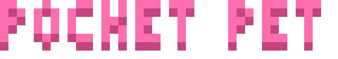
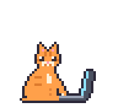
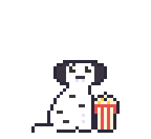
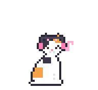
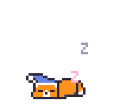
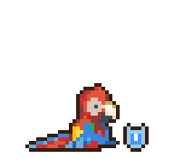
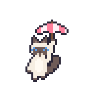
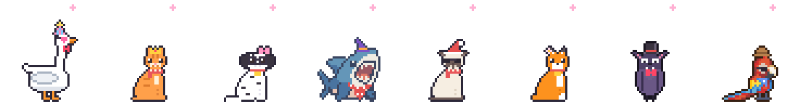
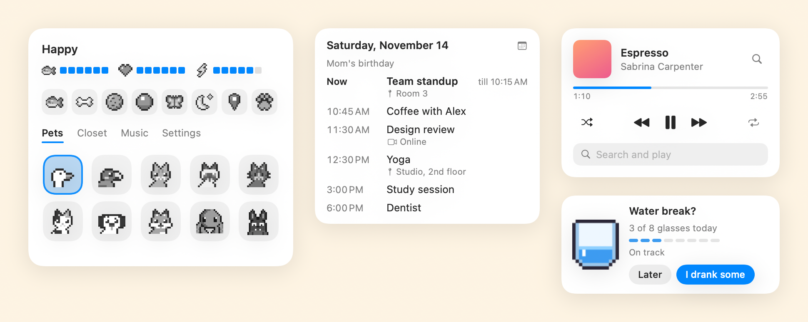

A little pixel pet that lives on your Mac's desktop. It plays, naps and dances to your music, reminds you to drink water, and keeps an eye on your calendar: it tells you what's on today, nudges you before each event, and reminds you about homework that's due soon.
Free and open source · macOS 13 or newer · Apple Silicon and Intel
One small pixel animal that wanders along the bottom of your screen and reacts to what you're doing.

When you type, it pulls out a tiny laptop and taps away too.

A video starts and out comes the popcorn. In fullscreen it sits in the black bar instead.

Tiny headphones go on with Spotify, Apple Music or any player. Click it for music controls.

Step away and it curls up in a nightcap, then wakes up when you're back.

Water reminders that keep pace with your day, your own habits, calendar nudges and homework that's due soon.

Cats float down on a little umbrella. The bat just flies back up.
Click one to take it along: it follows your cursor along the bottom of this page. In the app you can bring up to five at once.

Dress them up from the Closet: hats (including a Santa hat), glasses and neckwear.
Food, happiness and energy, today's calendar, music controls and a gentle water break, all from the paw in your menu bar.

No warnings and no admin password. Open Terminal and paste:
curl -fsSL https://raw.githubusercontent.com/d1v4nchik/Pocket-Pet/main/install.sh | bashIt goes in the Applications folder in your home folder, and updates itself from then on.
Connecting a calendar is optional. With "Sign in with Google", Pocket Pet only reads your calendars, and everything stays on your Mac. Nothing is collected, and Pocket Pet knows that you're typing, never what. See the privacy policy.